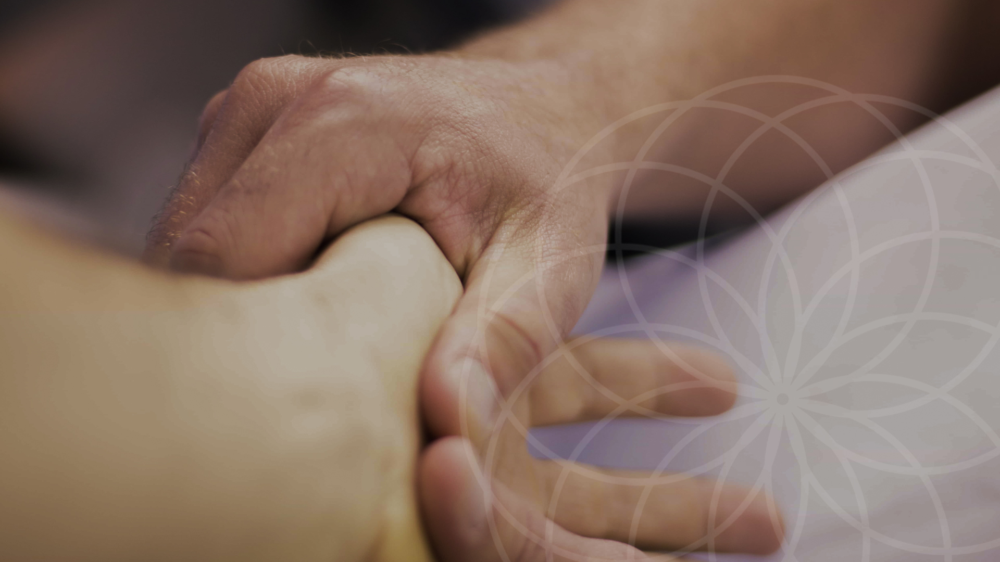
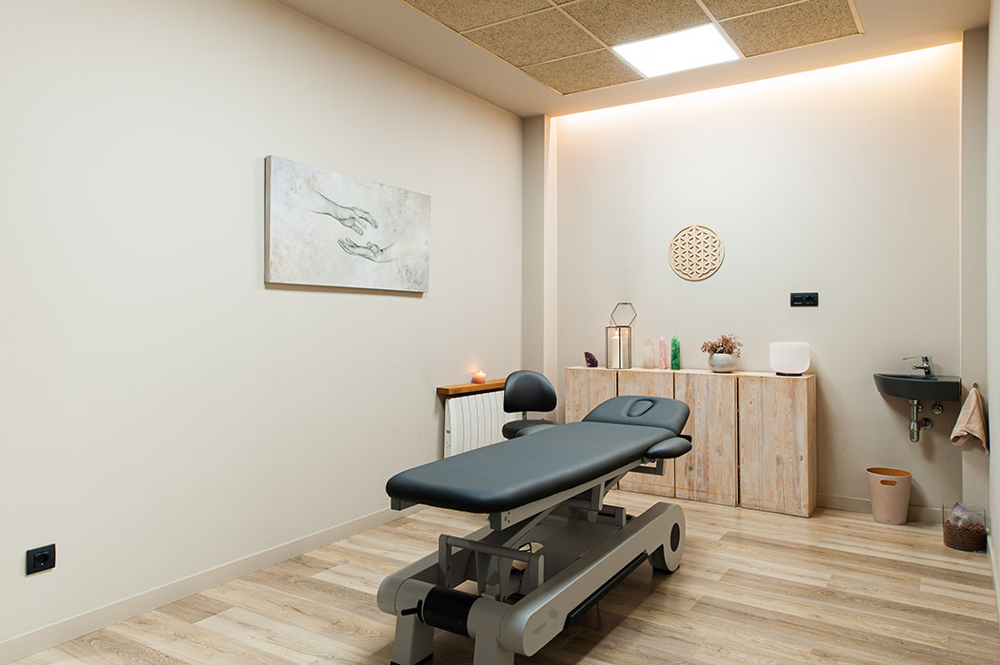
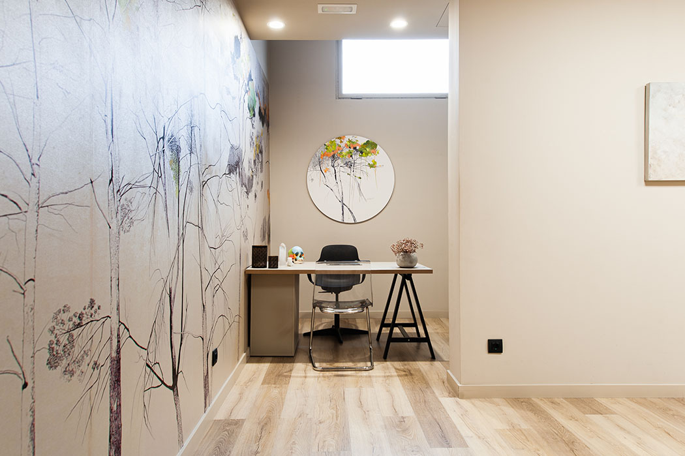
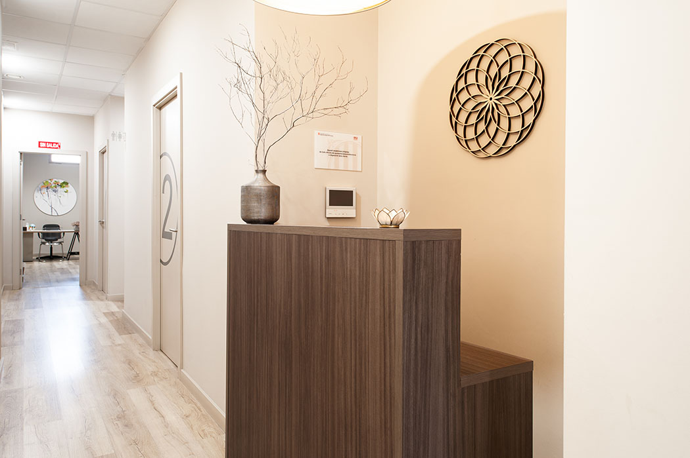
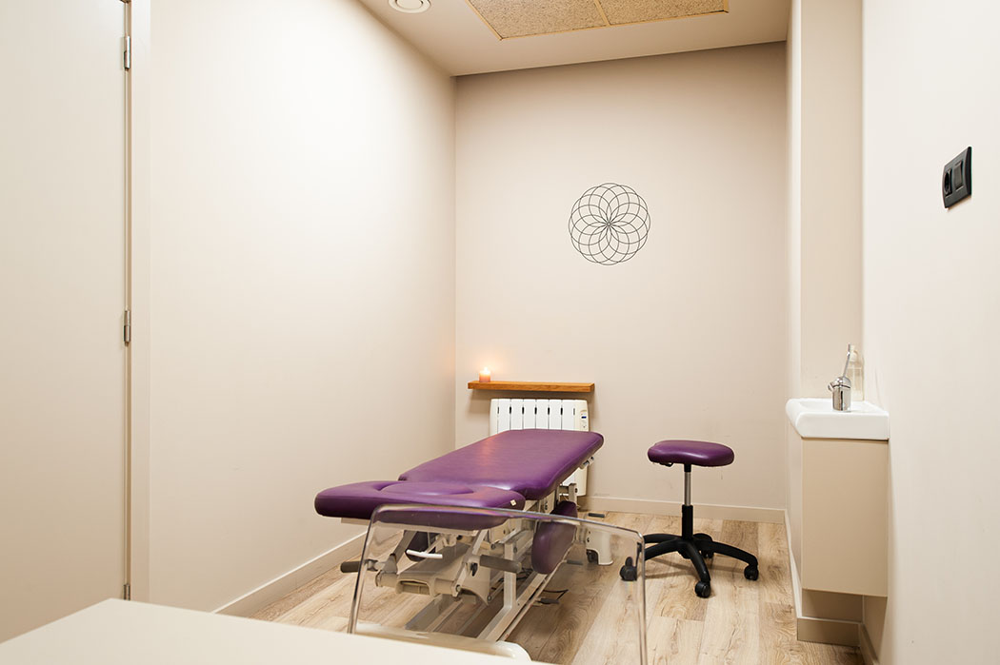
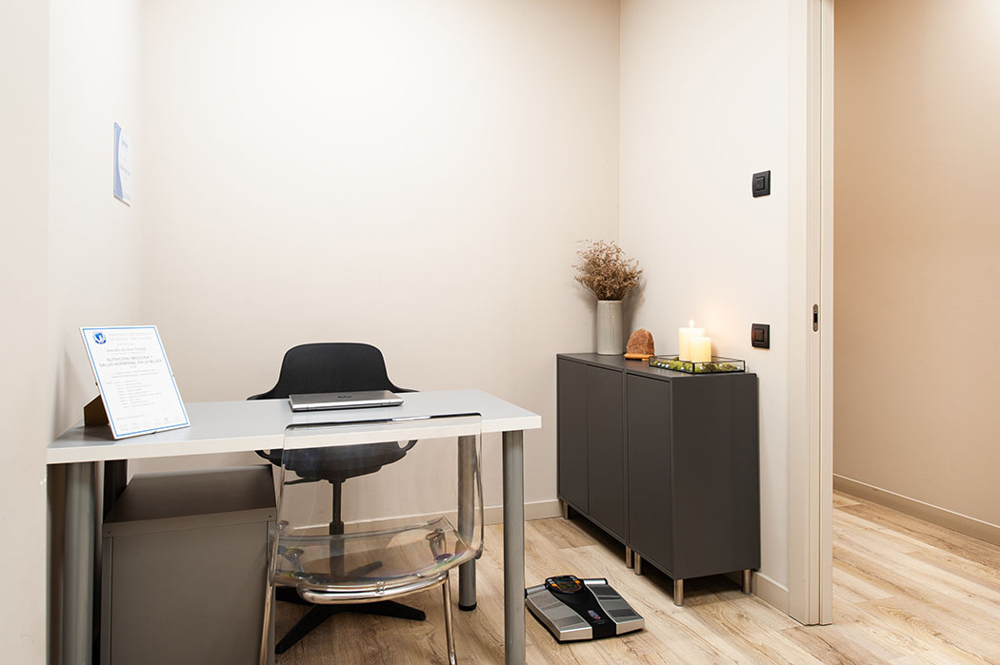
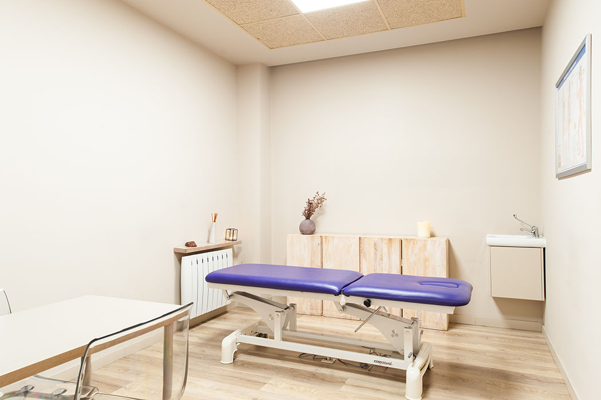

Escuchamos tu cuerpo con las manos.
Fisioterapia, osteopatía, nutrición, PNI y kinesiología bajo un mismo techo. Miramos el conjunto —lo físico, lo químico, lo emocional— y diseñamos un tratamiento solo para ti.

Carrer de Garcilaso 178
“Escuchar con las manos, la mente y el corazón.”
Espai Terapèutic nace de una idea sencilla: un método integrado, ajustado a cada paciente. Cada persona es el conjunto de sus necesidades físicas, químicas, energéticas y emocionales. Un todo donde cada parte depende de las demás.
- Fisioterapia
- Osteopatía
- Dietética y nutrición
- Kinesiología
- Psiconeuroinmunología
Cinco disciplinas, un solo plan.
Tenemos en cuenta la mecánica, la anatomía, la fisiología y planos más sutiles para devolver al cuerpo su equilibrio.
Sin prisa, sin recetas genéricas.
- 01
Escuchamos
La primera visita es para entender: tu historia, tu día a día y qué te ha traído hasta aquí. Después valoramos.
- 02
Tratamos
Combinamos disciplinas cuando hace falta. El mismo equipo coordina tu tratamiento, sin que tengas que ir de consulta en consulta.
- 03
Acompañamos
Te damos pautas de ejercicio, alimentación y hábitos para casa, para que la mejora no se quede en la camilla.
Un espacio tranquilo
en Sant Andreu.
Salas luminosas y silenciosas, pensadas para que el tratamiento empiece al cruzar la puerta.






Las manos detrás
de cada sesión.
Fisioterapeutas, osteópatas y nutricionistas colegiados que trabajan en equipo sobre cada caso.
¿Hablamos de lo que te pasa?
93 450 73 99Cuándo
Lunes a viernes
de 9:00 a 21:00 h, con cita